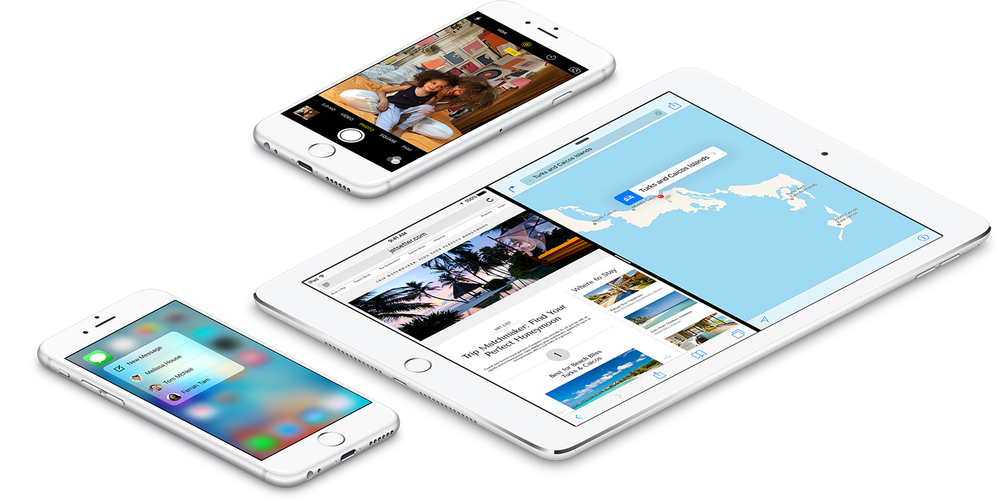
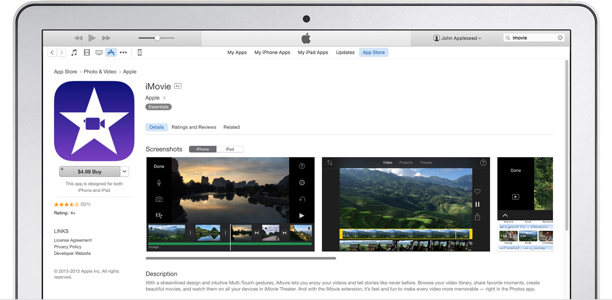
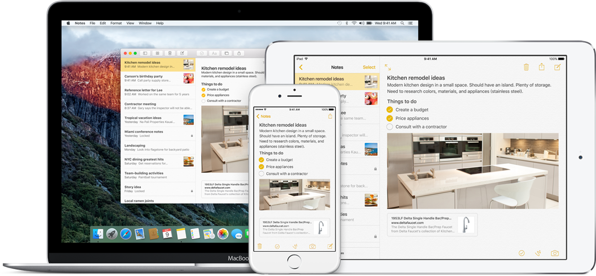
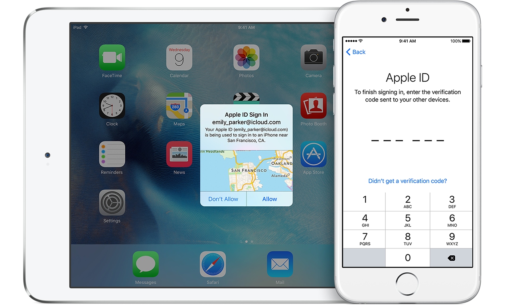

From the moment you pick up iPhone, iPad, or iPod touch, you know how to use it. That’s because iOS was designed to be easy to understand. The simple-yet-beautiful Home screen invites you to discover each of the built-in apps and features. So right away, you’re browsing your favorite websites, using search to find whatever you need, or effortlessly switching between apps. And no matter what you’re doing or what app you’re using, everything feels easy, intuitive, and even fun.
iOS is the platform for over a million and a half mobile apps — and counting.6 And every app starts with the right DNA. The App Store makes all of these apps easy to access, easy to search, and easy to buy. Just browse the App Store on your iOS device and download them with a tap.
iCloud makes sure all your devices always have the latest versions of your most important things, including documents, photos, apps, contacts, calendar events, and more
iCloud Drive lets you access all your files from any device. With Family Sharing, all your photos, videos, music, and iTunes purchases can be shared easily with your family across multiple Apple devices. And iCloud Photo Library keeps every photo and video you take all in one place, and you can access them from your iPhone, iPad, iPod touch, Mac, or PC and on iCloud.com.
Malware and viruses aren’t confined to desktops anymore. They can infect mobile devices, too. Which is why Apple takes security seriously when it comes to iOS. For starters, hardware and firmware features are designed to protect against malware and viruses, while iOS features help to secure your personal information. iOS 9 and OS X El Capitan have built-in support for two-factor authentication which, when enrolled, prompts you for a verification code when you sign in from a new browser or on a new device.11 This code is automatically displayed on your other Apple devices or sent to your phone, so you can quickly gain access to your account, while unauthorized users are kept out. Touch ID lets you use your fingerprint as a passcode, preventing unauthorized access to your device. When you use a passcode, it automatically encrypts and protects information like your email, calendar events, contacts, reminders, notes, messages, and third-party apps
iOS is designed to put your privacy first. If an app wants your location information or data from Calendar, Contacts, Reminders, or Photos, it needs your permission first. And you have complete control of how Health and HomeKit use your data. Conversations over iMessage and FaceTime are encrypted, including predictive text — so no one but you and the person you’re talking to can see or read what’s being said. And features built into Safari give you the ability to browse privately, block cookies, and prevent websites from tracking you.
Most of the websites you visit nowadays require user names and passwords. Remembering them all can be tough, but you can let iCloud Keychain do it for you. It stores your website user names and passwords on the devices you’ve approved, protects them with robust 256-bit AES encryption, and keeps them up to date on each device. Then it automatically fills them in whenever and wherever you need them. Password Generator can even suggest unique, hard-to-guess passwords for your online accounts. iCloud Keychain works with credit card information too, so checking out takes no time at all
With HomeKit, you can connect and control things in your home like lights, appliances and locks — so they all work together in smart and convenient ways.
The Health app brings data from health monitoring devices and your other health and fitness apps together — in one easy-to-read dashboard. And behind the scenes, HealthKit enables all those apps to work together. There are over 1,500 health-related apps available for download at the App Store, and more are added every day.
Source: Apple